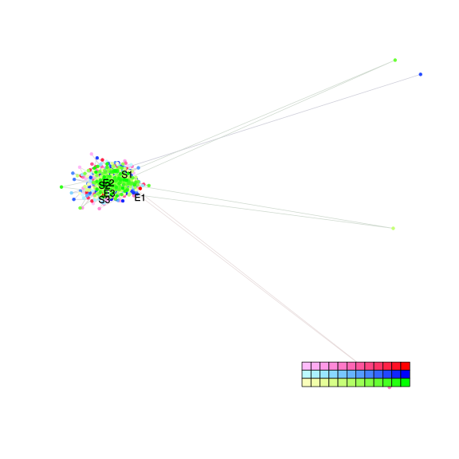
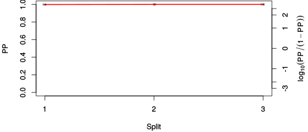
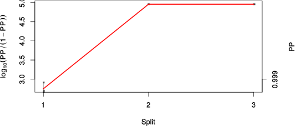

| chain # | burnin | subsample | Iterations (remaining) | command line | subdirectory | directory |
|---|---|---|---|---|---|---|
| 1 | 10000 | 1 | 90000 | bali-phy E1_AA_red3_v2_AvesTurtles.fas -s 66347 -n AvesTurtles_c1 | AvesTurtles_c1-1 | /DATA/work/ONCOGENEVOL/database/trees/Bali-Phy/E1 |
| 2 | 10000 | 1 | 90000 | bali-phy E1_AA_red3_v2_AvesTurtles.fas -s 87533 -n AvesTurtles_c2 | AvesTurtles_c2-1 | /DATA/work/ONCOGENEVOL/database/trees/Bali-Phy/E1 |
| 3 | 10000 | 1 | 90000 | bali-phy E1_AA_red3_v2_AvesTurtles.fas -s 73835 -n AvesTurtles_c3 | AvesTurtles_c3-1 | /DATA/work/ONCOGENEVOL/database/trees/Bali-Phy/E1 |
| P(data|M) = -7565.661 +- 0.679 | Complete sample: 3 topologies | 95% Bayesian credible interval: 1 topologies |

Phylogeny Distribution

| Partition support: Summary |
| Partition support graph: SVG |
| 50% consensus | Newick (+PP) | SVG | |||||
| 66% consensus | Newick (+PP) | SVG | |||||
| 80% consensus | Newick (+PP) | SVG | |||||
| 90% consensus | Newick (+PP) | SVG | |||||
| 95% consensus | Newick (+PP) | SVG | |||||
| 99% consensus | Newick (+PP) | SVG | |||||
| 100% consensus | Newick (+PP) | SVG | |||||
| MAP | Newick (+PP) | SVG | |||||
| greedy | Newick (+PP) | SVG |
{kind=link}
{kind=link}
{kind=link}
{kind=link}
{kind=link}
{kind=link}
{kind=link}
{kind=link}
Alignment Distribution
Partition 1
| Diff | Min. %identity | # Sites | Constant | Informative | ||||
|---|---|---|---|---|---|---|---|---|
| Initial | FASTA | HTML | Diff | 4.03% | 694 | 1 (0.144%) | 175 (25.2%) | |
| Best (WPD) | FASTA | HTML | AU | 26.3% | 1190 | 121 (10.2%) | 344 (28.9%) |


Mixing
| burnin (scalar) | ESS (scalar) | ESS (partition) | ASDSF | MSDSF | PSRF-CI80% | PSRF-RCF |
|---|---|---|---|---|---|---|
| 827 | 3326 | 127893.595 | 0.000 | 0.001 | 1 | 1.008 |
Projection of RF distances for the first 3 chains3D | Variation of split PPs across chains |
Scalar variables
| Statistic | Median | 95% BCI | ACT | ESS | burnin | PSRF-CI80% | PSRF-RCF |
|---|---|---|---|---|---|---|---|
| prior | -619.3 | (-716.8, -524.9) | 81.17 | 3326 | 827 | 0.9999 | 0.9967 |
| prior_A1 | -599.3 | (-695.1, -504.8) | 76.44 | 3532 | 538 | 0.9999 | 0.9984 |
| likelihood | -7513 | (-7563, -7460) | 72.9 | 3703 | 600 | 0.9997 | 0.9962 |
| logp | -8131 | (-8201, -8068) | 56.79 | 4754 | 609 | 1 | 0.998 |
| Heat.beta | 1 | ||||||
| Scale1 | 2.152 | (0.8354, 4.454) | 1.02 | 264761 | 162 | 1 | 1 |
| S1.F.pi.A | 0.07766 | (0.06657, 0.08939) | 8.437 | 32004 | 65 | 0.9999 | 0.9952 |
| S1.F.pi.R | 0.05286 | (0.0435, 0.06276) | 8.246 | 32744 | 417 | 0.9998 | 0.9945 |
| S1.F.pi.N | 0.03956 | (0.03211, 0.04751) | 8.533 | 31643 | 360 | 0.9997 | 0.9992 |
| S1.F.pi.D | 0.06656 | (0.0558, 0.07765) | 8.952 | 30161 | 566 | 0.9994 | 1.002 |
| S1.F.pi.C | 0.03487 | (0.02641, 0.04404) | 8.319 | 32454 | 255 | 0.9994 | 0.9985 |
| S1.F.pi.Q | 0.04186 | (0.03405, 0.05) | 7.821 | 34523 | 246 | 1 | 1.005 |
| S1.F.pi.E | 0.06075 | (0.05092, 0.07091) | 8.614 | 31345 | 329 | 0.9995 | 0.9924 |
| S1.F.pi.G | 0.07382 | (0.06128, 0.0866) | 8.91 | 30304 | 350 | 1 | 0.9955 |
| S1.F.pi.H | 0.02943 | (0.02268, 0.03665) | 8.86 | 30473 | 229 | 0.9999 | 1.002 |
| S1.F.pi.I | 0.04214 | (0.03386, 0.05088) | 8.356 | 32310 | 299 | 1 | 0.9984 |
| S1.F.pi.L | 0.08839 | (0.07556, 0.1016) | 9.077 | 29745 | 422 | 0.9998 | 1.008 |
| S1.F.pi.K | 0.04211 | (0.03403, 0.05065) | 8.351 | 32332 | 397 | 0.9998 | 0.9976 |
| S1.F.pi.M | 0.01959 | (0.0143, 0.0253) | 7.919 | 34096 | 405 | 0.9998 | 0.9967 |
| S1.F.pi.F | 0.03298 | (0.02511, 0.04133) | 8.444 | 31973 | 382 | 0.9999 | 0.9959 |
| S1.F.pi.P | 0.056 | (0.04562, 0.06719) | 9.072 | 29761 | 326 | 0.9996 | 0.9945 |
| S1.F.pi.S | 0.07936 | (0.06847, 0.09094) | 8.687 | 31082 | 367 | 1 | 0.9939 |
| S1.F.pi.T | 0.06641 | (0.05638, 0.07709) | 8.818 | 30618 | 600 | 1 | 0.9968 |
| S1.F.pi.W | 0.01027 | (0.005942, 0.01535) | 7.985 | 33814 | 581 | 1 | 1.005 |
| S1.F.pi.Y | 0.02973 | (0.02264, 0.0375) | 8.333 | 32400 | 290 | 1 | 0.9987 |
| S1.F.pi.V | 0.05287 | (0.04372, 0.06272) | 8.137 | 33183 | 366 | 1 | 1.002 |
| I1.RS07.meanIndelLengthMinus1 | 13.65 | (9.315, 18.99) | 34.7 | 7780 | 202 | 1 | 1.007 |
| I1.RS07.logLambda | -3.661 | (-4.029, -3.305) | 27.53 | 9807 | 207 | 0.9999 | 0.997 |
| |A1| | 1117 | (1043, 1188) | 29.6 | 9120 | 557 | 0.9965 | 0.999 |
| #indels1 | 65 | (53, 78) | 73.5 | 3673 | 538 | 0.9412 | 0.9988 |
| |indels1| | 953 | (804, 1126) | 13.63 | 19808 | 312 | 0.9984 | 0.9992 |
| #substs1 | 965 | (913, 1012) | 43.47 | 6211 | 300 | 0.9796 | 0.993 |
| Scale1*|T| | 2.331 | (2.149, 2.518) | 15.78 | 17107 | 233 | 1 | 0.9974 |
| |A| | 1117 | (1043, 1188) | 29.6 | 9120 | 557 | 0.9965 | 0.999 |
| #indels | 65 | (53, 78) | 73.5 | 3673 | 538 | 0.9412 | 0.9988 |
| |indels| | 953 | (804, 1126) | 13.63 | 19808 | 312 | 0.9984 | 0.9992 |
| #substs | 965 | (913, 1012) | 43.47 | 6211 | 300 | 0.9796 | 0.993 |
| |T| | 1.084 | (0.3711, 2.057) | 1 | 270003 | 150 | 0.9999 | 0.9997 |